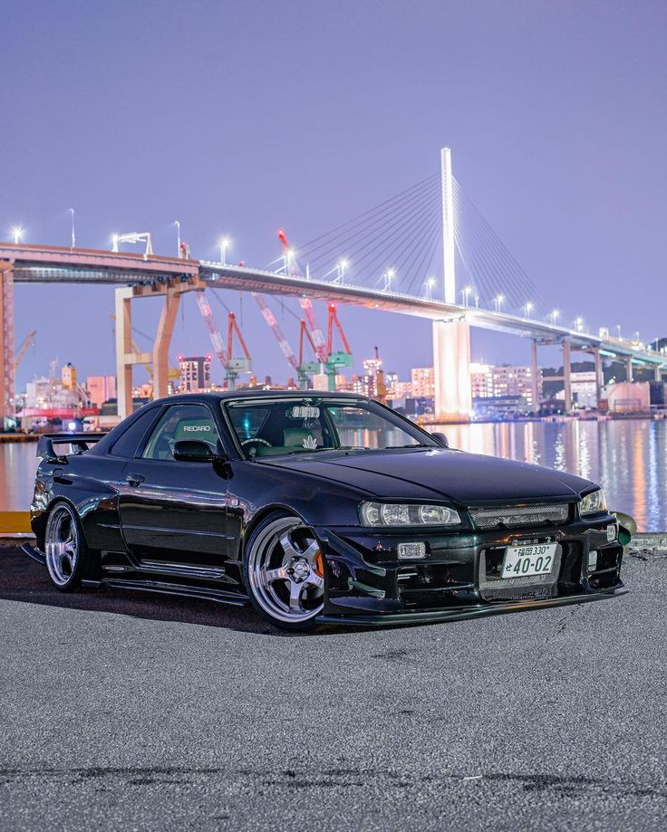
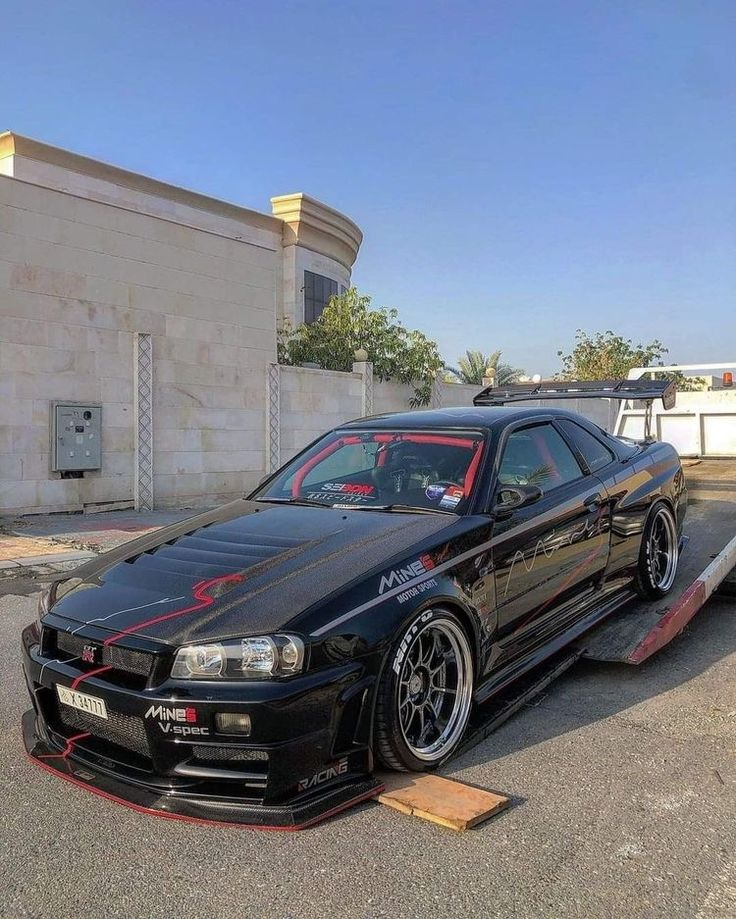
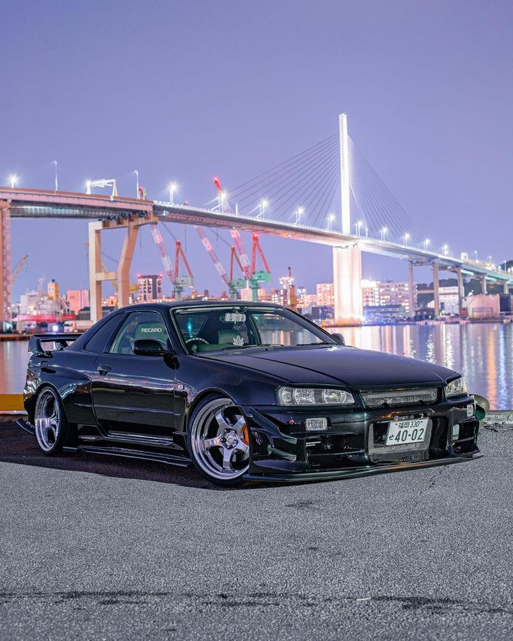
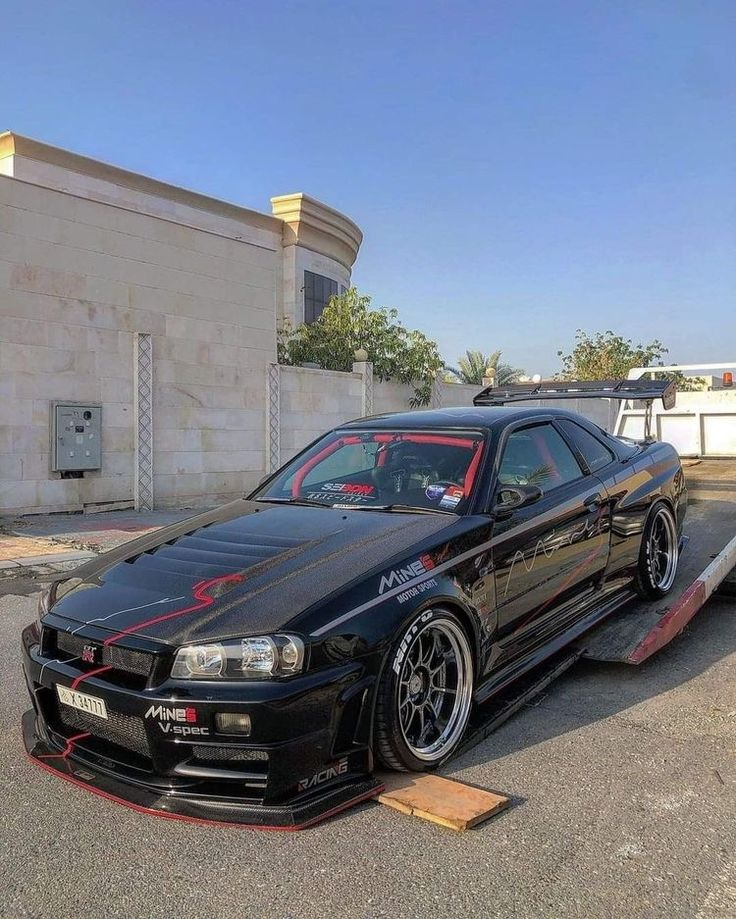

Nissan Skyline adalah deretan mobil yang compact yang awalnya diproduksi oleh Prince Motor Company pada tahun 1957, setelah itu Nissan Motor Company ketika kedua perusahaan itu bergabung pada tahun 1966. Setelah bergabung, Nissan Skyline dan saudara besarnya, Nissan Gloria, dijual di Jepang di dealership yang bernama Nissan Prince Shop.
Saat ini tersedia dengan model tubuh coupé atau sedan, dan yang paling sering dikenal dengan lampu rem berbentuk lingkaran (per 1972), sedangkan model tubuh station wagon dihilangkan pada tahun 1989 dengan pengenalan platform R32.
Nissan GT-R pertama,dikenal dengan kode internal Nissan PGC10,diluncurkan pada 4 Februari 1969,dan eksklusif pada jaringan dealer Nissan Jepang bernama Nissan Prince Store[4] pada saat perusahaan Prince melebur dengan operasi Nissan pada 1966.Mobil ini awalnya hanya tersedia dalam versi sedan 4-pintu pada debut publik pada Tokyo Motor Show Oktober 1968.Mobil ini diiklankan dengan mobil balap Nissan R380 untuk menampilkan DNA balap Skyline.Mobil ini memiliki mesin SOHC 2.0 L S20 menghasilkan 160 hp (120 kw) pada 7.000 rpm dan torsi sebesar 177 N.m (131 ft.lbf) pada 5.600 rpm.Kekuatan mesin dihantarkan ke roda belakang (RWD) melalui transmisi manual 5-percepatan.Skyline GT-R pertama menggunakan suspensi semi-trailing arm strut.Model kupe baru tersedia pada 1971 dengan kode sasis KGPC10.
.jpg)
 


